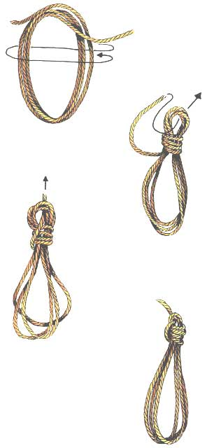

Opschieten van een touw
Met het opbergen van een touw bedoelen we het oprollen of opschieten in slagen, waarna het geheel dusdanig wordt gezet dat de slagen niet uiteenvallen. Als men de tros nodig heeft, dan kan hij snel en eenvoudig weer worden afgerold, zonder dat hij in de knoop raakt. Een van de makkelijkste manieren om een tros op te schieten is op de hand of arm, of als hij zwaar is, op de grond, waarna het geheel wordt vastgebonden.
Als een tros niet meer nodig is, moet hij naar behoren worden opgeborgen en daarvoor moet hij eerst worden opgeschoten. Schiet de tros enkele malen op door hem in de ene hand te nemen en er met de andere hand slagen in te maken. Als er nog maar een paar meter overblijft, worden er met de tamp (het uiteinde) kleine slagen rond de grote gemaakt. Als men zo enkele slagen gemaakt heeft, wordt de punt van de tamp door het bovenste deel van de slagen gestoken en aangetrokken. De kleine slagen worden zo naar boven getrokken, waardoor de tamp, net zoals de slagen, vast komt te zitten.
